Introdução à unidade
Nesta unidade, são estudados os conceitos relacionados ao triângulo retângulo. Inicia-se com a nomenclatura dos elementos de um triângulo retângulo e com alguns nomes especiais que os lados desse triângulo recebem: cateto e hipotenusa. Ainda, são explorados os conceitos de relações métricas no triângulo retângulo, o Teorema de Pitágoras e as aplicações decorrentes desse teorema.
A seguir, relacionamos os objetivos que se pretende atingir ao estudar os conceitos desta unidade.
Capítulo 1 – Triângulo retângulo e suas relações métricas
Capítulo 2 – Teorema de Pitágoras
Probabilidade e Estatística – Juros simples ou compostos
Objetivos:
Orientações específicas
Na abertura da unidade, apresentamos uma situação prática para verificar se duas paredes são perpendiculares entre si. Muitas vezes no cotidiano, profissionais fazem uso de relações matemáticas sem conhecer o seu nome. É o caso do Teorema de Pitágoras. Muitos pedreiros e carpinteiros, por meio da prática do dia a dia, utilizam o teorema em seus trabalhos. Questione os alunos em quais outras situações, além da construção civil e da carpintaria, esses conceitos são utilizados.
Comente com os alunos que muitas profissões trazem termos próprios para conceitos matemáticos, como no exemplo “estar no esquadro”, remete-se a estar formando um ângulo de 90°. Outro termo muito comum é de “estar no prumo”, utilizado em geral para verificar se a parede está reta em relação ao solo, para isso é utilizado um instrumento chamado “prumo”. Pergunte aos alunos se eles conhecem outros termos que remetem a conceitos matemáticos envolvendo grandezas de medidas. Caso julgue oportuno, estenda essa pesquisa aos familiares dos alunos resgatando a diversidade cultural e social.
|
Principais habilidades da BNCC |
EF09MA13 |
|
Competências |
CE2, CE3, CE5, CE8, CG9 |
Para contribuir com a aprendizagem das relações métricas, solicite aos alunos que desenhem dois triângulos retângulos exatamente iguais e que tracem a altura em um deles, dividindo-o em dois triângulos retângulos. Em seguida, peça a eles que escrevam em cada triângulo as letras correspondentes aos lados, à altura e às projeções sobre a hipotenusa. Feito isso, solicite que recortem os dois triângulos retângulos e que girem essas figuras, colocando-as na mesma posição. Por fim, peça que verifiquem quais lados são homólogos e escrevam a proporção encontrada.
Encontre soluções
Atividade 2
4² = x(x + 6)
16 = x² + 6x
x² + 6x - 16 = 0
x = 2, pois o valor negativo não serve.
Hipotenusa: 2 + 2 + 6 = 10 cm
Cateto AC: y² = 2 ∙ 10 → y² =
= 20 → y = 2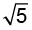
Cateto BC: z² = 8 ∙ 10 → z² =
= 80 → z = 4
Perímetro: 10 + 2 + 4 =
= 10 + 6 cm
Atividade 3
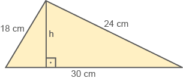
18 ∙ 24 = 30h
432 = 30h
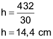
Atividade 4
x² = 24
x = 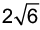 cm
36 = 10x
x = 3,6 cm
144 = 9,6x
x = 15 cm
9x = 36
x = 4 cm
5x = 12
x = 2,4 cm
9x = 108
x = 12 cm
Atividade 5
20² = 25m
25m = 400
m = 16 cm
15² = 25n
25n = 225
n = 9 cm
Atividade 6
36 = 12m - m²
m² - 12m + 36 = 0
m = 6 cm
n = 6 cm
b² = 72
b = 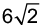 cm
c = cm
Atividade 7
20h = 16 ∙ 12
20h = 192
h = 9,6 cm
Atividade 8
15² = 25m
25m = 225
m = 9 cm
Atividade 9
b2 = am c2 = an
b2 = 100 . 36 c2 = 100 . 64
b = 60 c = 80
Contorno da praça:
100 + 80 + 60 = 240 m
6 000 : 240 = 25
25 voltas
Atividade 10
2² = x ∙ (x + 3)
4 = x² + 3x
x² + 3x - 4 = 0
x’ = 1 ou x” = -4 (não serve)
BC = 1 + 1 + 3
BC = 5 cm
Atividade 11
BC = 18 + 32
BC = 50 km
b2 = am c2 = an
b2 = 50 ∙ 18 c2 = 50 ∙ 32
b2 = 900 c2 = 1 600
b = 30 km c = 40 km
AC = 40 km, AB = 30 km,
BC = 50 km
Atividade 12
60 ∙ 80 = 100h
100h = 4 800
h = 48 cm
Atividade 13
b2 = am 4x = 8
b2 = 16 . 4 x = 2 cm
b2 = 64
b = 8 cm
BC = 8 cm
|
Principais habilidades da BNCC |
EF09MA01, EF09MA03, EF09MA04, EF09MA05, EF09MA13, EF09MA14 |
|
Competências |
CE1, CE2, CE3, CG9 |
No estudo do Teorema de Pitágoras, é explorada a demonstração por meio das relações métricas do triângulo retângulo e também por meio da comparação de áreas. A seguir, apresentamos outra situação que também pode ser explorada com os alunos.
[...] Muitas conjecturas têm sido feitas quanto à demonstração que Pitágoras poderia ter dado, mas, ao que parece, foi uma demonstração por decomposição como a que se segue. Denotemos por a, b e c os catetos e a hipotenusa de um triângulo retângulo, e consideremos os dois quadrados da figura anexa, cada um de lados iguais a a + b. O primeiro quadrado está decomposto em seis partes - a saber, os dois quadrados sobre os catetos e quatro triângulos retângulos congruentes ao triângulo dado. Subtraindo-se iguais de iguais, conclui-se que o quadrado sobre a hipotenusa é igual à soma dos quadrados sobre os catetos.
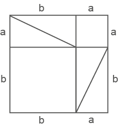
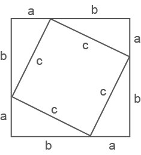
EVES, Howard. Introdução à história da Matemática. Tradução de Hygino H. Domingues.
3. ed. Campinas: Editora da Unicamp, 2002. p. 103. (Adaptado).
Solicite aos alunos que construam essas figuras e atribuam medidas para verificar o teorema.
Apesar da demonstração de como calcular a medida da altura de um triângulo equilátero e a medida da diagonal de um quadrado ter sido apresentada aos alunos, é importante que eles não se prendam a fórmulas. Incentive-os a utilizar o Teorema de Pitágoras quando houver necessidade de calcular algumas dessas medidas.
Antes de iniciar o uso do par de esquadros, apresente-os novamente aos alunos. Podemos ter dois tipos de esquadros. Solicite a eles que, usando a dobradura de ângulo reto, identifiquem em cada um dos esquadros o ângulo reto. Depois, pergunte se é possível identificar em qual dos esquadros os outros ângulos possuem a mesma medida. Eles podem usar a dobradura de ângulo reto, fazendo uma marca com o lápis na dobradura. Ao identificar o esquadro que possui dois ângulos agudos com a mesma medida, informe-os que estas medidas correspondem a 45º cada uma.
Com o auxílio de esquadros para uso do professor em sala de aula, construa com os alunos, realizando o passo a passo, o traçado de retas perpendiculares utilizando estes instrumentos.
Solicite aos alunos que, utilizando o esquadro, desenhem triângulos retângulos e meçam os seus lados para verificar se a relação é válida.
132 = 122 + 52; 172 =
= 152 + 82; 102 = 82 + 62;
152 = 122 + 92.
Sugestão de leitura
No livro A Rainha das Ciências: um Passeio Histórico Pelo Maravilhoso Mundo da Matemática, de Gilberto Geraldo Garbi, é possível encontrar algumas histórias sobre o desenvolvimento da Matemática. Há também um conteúdo dedicado à Pitágoras e a escola pitagórica com curiosidades e demonstrações do teorema.
Encontre soluções
Atividade 1
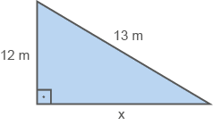
13² = 12² + x²
x² = 169 - 144
x² = 25
x = 5 m
A distância do pé da escada até o muro é de 5 metros.
Atividade 2
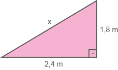
x² = 1,8² + 2,4²
x² = 3,24 + 5,76
x² = 9
x = 3 m
O comprimento da tábua deverá ser de 3 metros.
Atividade 3
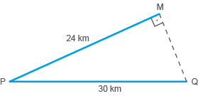
MQ² = 30² - 24²
MQ² = 900 - 576
MQ² = 324
MQ = 18 km
Essa estrada terá 18 km.
Atividade 4
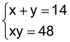
y(14 - y) = 48
14y - y² - 48 = 0
y² -14y + 48 = 0
y’= 6
y” = 8
Para y = 6 → x = 14 - y → x = 14 - 6 → x = 8
Para y = 8 → x = 14 - y → x = 14 - 8 → x = 6
a² = 6² + 8²
a² = 36 + 64
a² = 100
a = 10 cm
Atividade 5
Como o triângulo retângulo de catetos medindo 3 cm e 4 cm é pitagórico, a hipotenusa mede 5 cm. A medida dos outros lados pode ser calculada fazendo-se a subtração: 24 - 3 - 4 = 17 cm.
Perímetro: 4 ∙ 5 + 4 ∙ 17 = 88 cm.
Atividade 6
Como o perímetro mede 50 cm, tem-se que o semíperímetro mede 25 cm. Como o lado menor mede 10 cm, tem-se que o lado maior mede 15 cm.
d² = 10² + 15²
d² = 100 + 225
d² = 325
d = 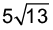 cm
Atividade 7
Se o lado maior mede 8 cm, então, o lado menor mede 6 cm, pois sua área é igual a 48 cm².
EH² = 4² + 3²
EH² = 16 + 9
EH² = 25
EH = 5 cm
Perímetro polígono: 4 ∙ 5 = 20 cm
Atividade 8
MN² = 7² + 7²
MN² = 49 + 49
MN² = 98
MN = 7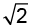 cm
NO² = 3² + 3²
NO² = 9 + 9
NO² = 18
NO = 3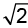 cm
Perímetro: 2 ∙ 7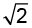+ 2 ∙ 3 = 20 cm
Área: 7 ∙ 3 = 21 ∙ 2 = 42 cm²
Atividade 9
(24 - x)² = x² + 12²
24² - 48x + x² - x² - 144 = 0
576 - 48x - 144 = 0
48x = 432
x = 9 m
Atividade 10
Este triângulo é pitagórico pois 160 e 120 são múltiplos de 4 e 3, respectivamente. Mostre aos alunos que eles poderão usar o conceito de semelhança para encontrar a medida da hipotenusa. Dividindo todos os lados por 40, têm-se os catetos medindo 4 cm e
3 cm. Logo, a hipotenusa medirá 5 cm. Para sabermos a medida real basta multiplicar 5 por 40. Logo, a hipotenusa medirá 200 cm ou 2 m.
A distância entre as duas pessoas é de 2 metros.
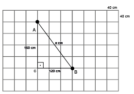
Atividade 11
AB² = 100 - 36
AB = 8 cm
AC² = 17² - 8²
AC² = 289 - 64
AC² = 225
AC = 15 cm
Atividade 12
(x + 4)² = x² + (x + 2)²
x² + 8x + 16 = x² + x² + 4x + 4
x² + 4x + 4 - 8x - 16 = 0
x² - 4x - 12 = 0
x = 6
Perímetro: 10 + 6 + 8 = 24 cm
Atividade 13
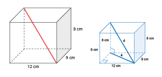
a2 = b2 + c2
a2 = 92 + 122
a2 = 81 + 144
a2 = 225
a = 15 cm
d2 = a2 + 82
d2 = 82 + 152
d2 = 64 + 225
a2 = 289
a = 17 cm
A vareta mede 17 cm.
Atividade 15
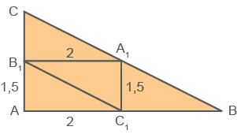
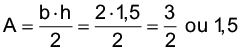
Atividade 16
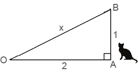
OB2 = 22 + 12
OB2 = 4 + 1
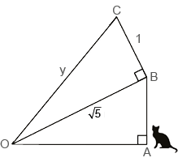
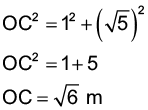
1.º salto -------- m
2.º salto -------- 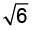 m
3.º salto -------- 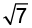 m
4.º salto -------- 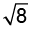 m
: :
2 014.º salto ---- 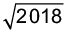m
Após 2 014 saltos, a gata estará a uma distância m do ponto O. Para descobrir depois de quantos saltos a gata estará a 45 m do ponto O, precisamos descobrir um número que a raiz quadrada seja igual a 45, ou seja, este número deve ser igual a 2 025. Portanto, de acordo com a tabela, podemos concluir que a gata estará a uma distância de 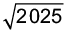m após 2 021 saltos.
Nesse momento, retomamos os números irracionais levando os alunos a compreender que, uma vez fixada uma unidade de comprimento, existem segmentos de reta cujo comprimento não é expresso por um número racional (como as medidas de diagonais de um polígono e alturas de um triângulo, quando se toma a medida de cada lado como unidade), conforme solicita a habilidade EF09MA01. Além de auxiliar os alunos a reconhecerem um número irracional como um número real cuja representação decimal é infinita e não periódica, prevista na habilidade EF09MA02.
Encontre soluções
Atividade 1
d2 = 36 + 36
d2 = 72
d = 6 cm
42 = 324 + ℓ²
32 = 324
2 = 108
h2 = 256 - 64
h2 = 192
16 = 22
2 = 8
Atividade 2
Medida do lado: 20 : 4 = 5 cm
d2 = 52 + 52
d2 = 50
d = 5 cm
Atividade 3
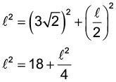
42 = 72 + 2
32 = 72
2 = 24
= 2 cm
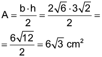
Atividade 4
x2 = 32 + 32
x² = 9 + 9
x² = 18
x = 3
x = 3 ∙ 1,14 = 4,23 km
Atividade 5
642 = x2 + 322
x² = 4 096 - 1 024
x² = 3 072
x = 32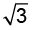
x = 32 ∙ 1,73 = 55,36 km
Probabilidade e estatística – Juros simples ou compostos
O estudo de porcentagens é retomado para que os alunos percebam como a porcentagem pode ser utilizada no cálculo de empréstimos e em outros momentos da vida financeira, são ideias que podem também ser representadas em planilhas eletrônicas. Nesse momento, os alunos serão levados a resolver e elaborar problemas envolvendo porcentagens, com a ideia de aplicação de percentuais sucessivos e com viés da educação financeira, fazendo uso de tecnologias digitais (habilidade EF09MA05). Além disso, o conteúdo relaciona-se com a Competência geral 10, pois, administrar bem suas finanças pode proporcionar autonomia e liberdade aos alunos em relação ao mercado e ao acúmulo de despesas. Enfatize que a formação de cidadãos críticos e não consumistas é um dos objetivos da Matemática.
A situação tem por objetivo abordar a educação financeira trazendo para sua realidade a plicação de conceitos matemáticos. A educação financeira possibilita aos alunos o conhecimento de como lidar melhor com o dinheiro, e permite que eles possam gerenciar de forma inteligente os recursos que têm. Um dos principais objetivos apontados pela BNCC é o estudo de conceitos básicos de economia e finanças, visando a educação financeira dos alunos. Assim, podem ser discutidos assuntos como taxas de juros, inflação, aplicações financeiras (rentabilidade e liquidez financeira) e impostos, favorecendo um estudo interdisciplinar envolvendo as dimensões culturais, sociais, políticas e psicológicas, além da econômica, sobre as questões de consumo, trabalho e dinheiro (BNCC, p. 269).
A compreensão do que significa “dar um desconto”, “ter juros”, “pagar uma multa”, por exemplo, nos facilita no dia a dia na tomada de decisão em assuntos referentes ao financeiro.
Incentive os alunos a realizarem o cálculo mental em situações como estas e converse com eles sobre estratégias que podem ser usadas para facilitar o cálculo.
Relembre
Atividade 1
(x + 2)² = x² + (x - 2)²
x² + 4x + 4 = x² + x² - 4x + 4
-x² + 4x + 4x = 0
-x² + 8x = 0
x(x - 8) = 0
x = 0
x = 8
Hipotenusa: x + 2 = 8 + 2 = 10
Atividade 2
Caso julgue necessário,
peça aos alunos que utilizem
a calculadora para agilizar
os cálculos.
x² = 120² + 90²
x² = 14 400 + 8 100
x² = 22 500
x = 150
Corrimão: 30 + 150 + 30 =
= 210 cm = 2,1 m
Atividade 3
b² = am (I)
c² = an (II)
Subtraindo-se I e II, tem-se:
b² - c² = am - an
b² - c² = a(m - n)
Atividade 4
b² = 32 ∙ 50
b² = 1 600
b = 40 m
Atividade 5
13² = 5² + x²
x² = 169 - 25
x² = 144
x = 12 cm
20² = 12² + y²
y² = 400 - 144
y² = 256
y = 16 cm
Total de vareta:
16 + 5 + 12 + 12 = 45 cm
Atividade 6
AB² = 3² + 4²
AB² = 9 + 16
AB² = 25
AB = 5 km
Atividade 7
O ΔABC é pitagórico, portanto, o lado AC mede 12 km. Aplicando o Teorema de Pitágoras no ΔABD, temos:
x2 = (12 - x)2 + 92
x2 = 144 - 24x + x2 + 81
24x = 225
x = 9,375 km
Atividade 8
12² = mn
m - n = 7 → m = 7 + n
144 = n(7 + n)
144 = 7n + n²
n² + 7n - 144 = 0
n = 9 cm
m = 7 + n = 7 + 9 = 16 cm
Hipotenusa: 9 + 16 = 25 cm
Atividade 9
BC² = 6² + 12²
BC² = 36 + 144
BC² = 180
BC = 6 cm
Atividade 10
Posição 1:
250² = x² + 70²
x = 240
Posição 2:
250² = y² + (70 + 80)²
y = 200
Deslocamento da extremidade da parede:
240 - 200 = 40 cm
Atividade 11
O segmento de reta formado pelo ponto de partida com o de chegada é a hipotenusa de um triângulo retângulo cujos catetos medem 3 km e 4 km. Assim:
x² = 3² + 4²
x² = 9 + 16
x² = 25
x = 5 km a nordeste
Atividade 12
a² + b² + c² = 32
a² + a² = 32
2a² = 32
a² = 16
a = 4
Atividade 13
(x + 2)2 = x2 + (x + 1)2
x2 + 4x + 4 = x2 + x2 + 2x + 1
x2 - 2x - 3 = 0
x = 3
Perímetro:
x + x + 1 + x + 2 = 3 + 3 + 1 + 3 + 2 = 12
Atividade 14
Para c = 6, temos b = 12.
Para c = 12 temos b = 6.
Portanto, os catetos medem
6 cm e 12 cm.
Atividade 15
a2 = 1 + 4
a2 = 5